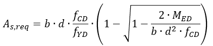
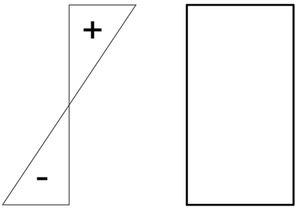

V železobetonových konstrukcích je množství výztuže a její umístění klíčové pro posouzení únosnosti. U jednoduchých konstrukcí se na vyztužení posuzuje vzorový příčný řez, jehož výztuž se poté aplikuje na celou délku konstrukce. Umisťování výztuže se řídí několika zásadami. Umisťuje se vždy co nejdále od těžiště průřezu a umisťuje se do části, kde je průřez tažený. Výztuž může být ale i konstrukční, což znamená, že je v průřezu umístěna především kvůli snadnější realizaci dané konstrukce.
Například u obdélníkového průřezu, který má šířku a výšku , je potřeba navrhnout množství ocelových prutů, které mají průřez tvaru kruhu o průměru 20 mm. Počet prutů se navrhuje pomocí vzorce, ze kterého dostaneme minimální nutnou plochu, kterou musí pruty pokrýt. Tato minimální plocha se nazývá a poté plocha všech nosných (ne konstrukčních) prutů musí být větší. Počet prutů tedy musí být zaokrouhlený na celá čísla a musí splňovat podmínku . Vzorec pro je uveden níže:

Důležitá je i jejich pozice. Pruty se umísťují do části průřezu, který je tažený, protože výztuž pomáhá zvýšit únosnost v tahu. Tlačená část bývá označována znaménkem mínus a tažená část bývá označována znaménkem plus, což je vykresleno na obrázku níže.

Pro uvedený příklad vyberte nejvhodnější návrh výztuže v příčném řezu u nosníku, který je namáhán ohybovým momentem .
Pro výpočet využijte následujících předpokladů:
- průměr ocelových prutů výztuže je 20 mm
- použijte vzorec pro a do vzorce dosazujte v základních jednotkách, jako jsou a
A) 6 prutů v horní části jako nosná výztuž a 2 pruty v dolní části jako konstrukční výztuž
B) 6 prutů v dolní části jako nosná výztuž a 2 pruty v horní části jako konstrukční výztuž
C) 8 prutů ve střední části jako nosná výztuž a 2 pruty v horní i dolní části jako konstrukční výztuž
D) pouze konstrukční výztuž
E) 9 prutů v horní části jako nosná výztuž a 2 pruty v dolní části jako konstrukční výztuž